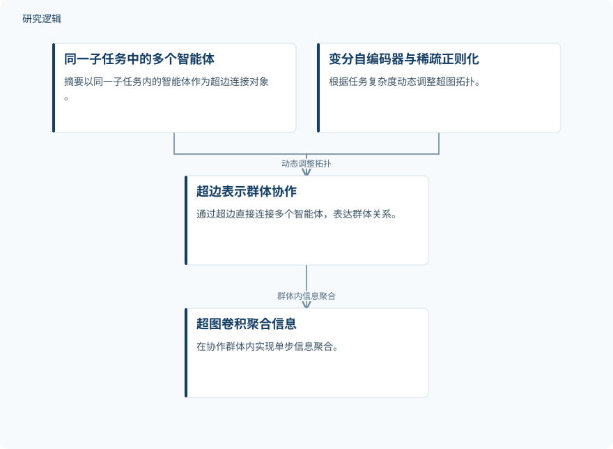

摘要解读
HyperAgent：利用超图优化多智能体通信拓扑
HyperAgent: Leveraging Hypergraphs for Topology Optimization in Multi-Agent Communication
解读更新 2026-10-26 23:47 · 依据公开摘要整理，未核验全文细节
多智能体协作并非通信越多越好：简单任务可能承担多余开销，复杂任务又可能协调不足。HyperAgent尝试用超图表达群体协作，并随任务复杂度调整通信拓扑，值得关注的是它如何兼顾回答表现与通信效率。
文章目录
两两连边为何难以表达群体协作
摘要指出，大语言模型驱动的多智能体系统虽已展现集体智能，但通信结构仍面临两类问题：基于图中两两连边的表示，难以充分捕捉多个智能体之间的群体关系；通信拓扑对任务的适应性有限，容易在简单任务上通信过多，在复杂场景中协调不足。
因此，这项工作的关注点不仅是智能体能否交换信息，还包括如何表达协作群体、如何让通信结构适应任务需求。摘要将这两类问题与自适应协作框架的可扩展性及实际部署联系起来。
用超边组织协作，用稀疏约束调整拓扑
HyperAgent采用超图框架，以超边直接连接同一子任务中的多个智能体，表示群体协作关系；随后利用超图卷积层，实现协作群体内的单步信息聚合。这里的“单步”指摘要描述的聚合机制，不能据此理解为整个任务只需一轮通信。
框架还引入带稀疏正则化的变分自编码器，根据任务复杂度动态调整超图拓扑。群体关系表达与拓扑自适应，是摘要明确给出的两项方法要点；具体网络配置、训练方式和复杂度判定方法则未在摘要中展开。
依据摘要整理的HyperAgent方法示意


仅概括摘要明确描述的群体表示、信息聚合与拓扑调整关系，不是论文原图，不表示完整执行顺序。
下载 SVG图示关系说明
实线表示相邻阶段的信息流，虚线表示跨阶段联系或反馈。
同一子任务中的多个智能体 → 超边表示群体协作：以超边连接；超边表示群体协作 → 超图卷积聚合信息：群体内信息聚合；变分自编码器与稀疏正则化 → 超边表示群体协作：动态调整拓扑
GSM8K上同时报告准确率与token节省
摘要报告，HyperAgent在GSM8K上的准确率达到95.07%，同时将token消耗降低25.33%。这组结果同时涉及任务表现与通信资源开销，是摘要支持其性能和效率优势的具体例证。
不过，摘要没有交代token降幅对应的比较基准，也没有列出其他任务的具体结果。因此，可以说作者报告了超图通信优化的潜力，但不能把这一例证扩展为对所有任务、模型或部署条件均有效的结论。
摘要尚不足以界定比较与验证范围
仅凭本次摘要，无法判断评测样本规模、智能体配置、基础模型、对照方法、重复运行情况及结果波动，也无法确认各方法组件分别贡献了多少收益。这些属于摘要未报告的信息，不代表论文没有开展相应比较或验证。
阅读启发：先辨清通信拓扑，再讨论应用迁移
阅读启发：值得进一步阅读的是，任务复杂度如何影响拓扑调整，以及节省token时是否仍能保留必要的群体协调。面向智能运维，可关注这类通信组织方式是否适合多角色协作，但当前摘要没有提供运维场景的验证依据。此外，本文的“拓扑优化”针对智能体通信关系，不能直接等同于工程结构的材料布局优化。
以上为本站阅读启发与建议，不是论文已验证的结论。